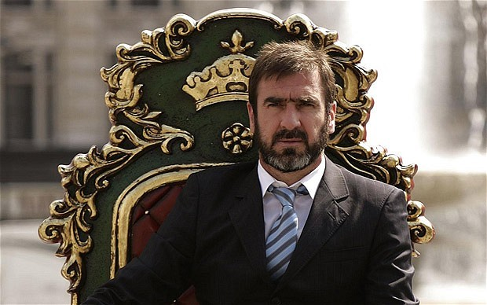

Chương 24

ưa có chuyện nhà họa sỹ thiên tài chuyên vẽ hình rồng bay trong mây, song không bao giờ vẽ mắt, bởi nếu có mắt, rồng trên giấy sẽ hóa ra "phi long tại thiên", bay vút lên trời cao. Đội hình Manchester United trước tháng 11 năm 1993 có thể ví với bức long vân họa, còn Eric Cantona chính là một cặp mắt rồng. Trong sự nghiệp lẫy lừng ở Old Trafford, cho đến nay, Alex Ferguson đã gây dựng cho United ba thế hệ cầu thủ tài năng. Đó là các thế hệ 1993-1994, 1998-1999, và 2007-2008. Thế hệ 93-94 chỉ hoàn tất với cuộc chuyển nhượng Cantona từ Leeds.
Cantona là con người hết sức phức tạp. Giống với Alex, anh như một ngọn núi lửa lúc nào cũng sẵn sàng bùng nổ. Chỉ cần thua một trận ping pong đánh chơi với bạn, Cantona có thể nhảy lên đạp gẫy cả bàn bóng. Không chỉ nóng tính, anh còn ngông nghênh chẳng cần biết trên đầu có ai, chính vì vậy mà hễ đi đến đâu là gây rối đến đấy. Bị thẻ đỏ, lĩnh án phạt, cãi HLV, đánh nhau cùng đồng đội, là chuyện thường thấy ở Cantona. Ở Marseille, khi bị thay ra giữa chừng trong trận đấu giao hữu, anh xé toạc áo rồi sút bóng văng lên khán đài, kết quả là bị treo giò một tháng. Với ĐTQG Pháp, anh thậm chí bị treo giò một năm, vì tội lên truyền hình chửi HLV Henri Michel là…đồ cứt đái! Lúc thi đấu cho Nimes, Cantona quăng bóng vào trọng tài. Bị triệu tập ra trước ủy ban kỷ luật, anh chỉ thẳng vào mặt từng thành viên ủy ban, quát lên: “Chúng mày là lũ ngu si!” Lãnh án cấm đấu hai tháng, anh tuyên bố giã từ sân cỏ vào tháng 12, 1991, lúc mới 25 tuổi.
Đọc những thành tích bất hảo trên, không khỏi nghĩ rằng Cantona là kẻ vô giáo dục, song thực chất, trong giới “quần đùi áo số”, anh thuộc hàng có văn hóa bậc nhất. Không mấy cầu thủ biết thưởng thức nhạc cổ điển, biết cầm cọ vẽ tranh trừu tượng như Cantona. Càng không mấy người say mê thơ của Arthur Rimbaud[1] hay đọc ngấu nghiến sách triết của Jean Paul Sartre[2]. Khi nói cũng như khi viết, Cantona hay dùng những hình ảnh ẩn dụ đầy ý vị, ngôn từ của anh mang đậm nét văn hoa, tinh tế của một trí thức đến từ đô thành ánh sáng. Có thể nói, trong Cantona, tồn tại những thái cực trái ngược, có cả thiên thần lẫn quỷ dữ. Nếu biết dùng anh, thì thiên thần sẽ hiện ra, còn không biết dùng thì thấy toàn quỷ.
Tuy nhiên, tài năng trên sân cỏ của Cantona là điều không ai phủ nhận. Không muốn bỏ phí nhân tài, các HLV ĐTQG Pháp như Michel Platini và Gérard Houllier ra sức thuyết phục anh tái xuất. Theo lời khuyên từ Houllier, Cantona sang Anh, thử sức ở một môi trường mới. Anh ký hợp đồng với Leeds vào giữa mùa 1991-1992. Leeds là CLB thứ bảy của Cantona chỉ trong vòng chín năm.
Trong thời gian ở Elland Road, Cantona gây ấn tượng mạnh. Anh đá tổng cộng 35 trận, ghi 14 bàn, trong đó có hai hattrick, góp công lớn giúp Leeds lên ngôi VĐQG. Nhưng càng ngày, mối quan hệ giữa anh và những người chung quanh càng xấu đi. Anh gây sự với đồng đội, không nghe theo chỉ đạo của HLV Howard Wikinson,và mỗi khi bị thay ra sân thì nổi khùng. Thêm vào đó lại còn lười biếng, thường xuyên bỏ tập. Wilkinson bắt đầu lo lắng, sợ tay ngựa chứng này hứng lên tuyên bố từ giã sân cỏ lần nữa thì Leeds mất cả chì lẫn chài. Cantona cũng đòi ra đi. Anh gửi thư cho HLV, trong chỉ ghi vỏn vẹn một câu “Cá chép ngược dòng nước; sao vượt nổi vũ môn?”[3]Do vậy, khi Manchester United dạm hỏi Cantona, Wilkinson gật đầu chấp nhận cái giá rẻ bèo một triệu bảng.
Cantona mang dáng dấp oai phong, bệ vệ như một ông hoàng, ngực luôn ưỡn ra, đầu lúc nào cũng ngẩng cao ngạo nghễ.Đối với người như thế, Alex Ferguson hiểu rõ mình không thể kẻ cả “Chào mừng anh đến với Manchester United vĩ đại”. Ngược lại, ông cần nhún mình và ngả mũ “Chào mừng người vĩ đại đã đến CLB của chúng tôi”. Quả vậy, trong lần gặp gỡ đầu tiên, Alex không nói gì ngoài những lời ca ngợi Cantona, nào là ông đánh giá anh cực cao, nào là ông đã mong anh từ lâu lắm. Cảm thấy được trân trọng, Cantona vô cùng hài lòng.
Những kẻ cao ngạo ít khi chấp nhận làm việc dưới quyền người khác, nhưng một khi đã chịu thì sẽ tận tâm tận lực. Cantona cũng không ngoài lệ đó. Vừa chân ướt chân ráo đến Old Trafford, được HLV cho phép nghỉ ngơi, anh vẫn một mực xin ra sân tập ngay. Lúc buổi tập kết thúc, đồng đội đã rời sân, anh tìm gặp Alex Ferguson:
-Thầy cho tôi mượn hai cầu thủ trẻ được không?
-Để làm gì? Alex ngạc nhiên.
-Để tập tiếp!
Khỏi phải nói, Alex hơn cả sẵn lòng. Ông cho gọi hai học viên tới, bảo họ tập chung cùng Cantona, và còn “cung cấp” thêm cho Cantona một thủ môn để anh tập dứt điểm. Các cầu thủ khác đã nghỉ ngơi, nay nhìn ra thấy Cantona đang miệt mài, không khỏi cảm thấy tự xấu hổ, bèn xỏ giầy vào sân trở lại. Từ đó trở đi, mỗi khi hết giờ, toàn đội đều ở lại tập với Cantona thêm một chập nữa mới thôi.
Cùng một Cantona, nhưng ở Elland Road thì thường xuyên trốn tập, ở Old Trafford lại trở thành tấm gương cho đồng đội noi theo. Chỉ do HLV có biết thuật “đắc nhân tâm” không mà thôi.
Mấy mươi năm cầm quân, trải qua bao CLB, Alex Ferguson mắng tuốt chẳng chừa ai. Chỉ có ba người, rất hiếm khi ông nặng lời: Willie Miller, Bryan Robson, và Eric Cantona. Không những không nặng lời, ngày nào Alex cũng cho Cantona “uống nước đường”: Hết ngợi khen lại đến động viên, khiến lòng tự cao của anh được thỏa mãn. Nếu Cantona không chấn thương, Alex hầu như không để anh ngồi ghế dự bị, hoặc thay anh ra giữa chừng. Cầu thủ khác được cưng chiều quá lố có thể sinh hư, riêng với Cantona, càng được “cưng”, anh càng ra sức trên sân để báo đáp ân tình của HLV. Đồng đội không ai ghen tỵ với Cantona. Họ đều tự nhủ: Đá hay thế kia, HLV ưu ái là phải.
Về mặt kỷ luật, Alex chấp nhận: Thiên tài cần có sự tự do. Ông chẳng khi nào nhắc Cantona tuân thủ nội quy. Trong lúc mọi người ai ai cũng phải tóc tai gọn ghẽ, Cantona tự do để râu xồm xoàm. Đi giao lưu với fan, cầu thủ đều bị bắt mặc đồ vest tề chỉnh, duy Cantona lông nhông áo phông quần bò. Sáng sáng, mỗi khi Cantona đến tập trễ, Alex chẳng nói, chẳng phạt gì.
Nhưng như thế không phải Alex không quản nổi Cantona. Trái lại, ông quản bằng “lạt mềm buộc chặt”, lấy nhu mà chế cương. Nhận thấy HLV tôn trọng, giành cho mình tự do tuyệt đối, Cantona cảm động, dần dần tự giác làm theo nội quy, không đợi ai phải bảo. Anh cạo râu sạch sẽ, nghiêm túc chấp hành mọi điều lệ. Từ chỗ hay đến muộn, nay anh không những có mặt đúng giờ, mà còn tới sớm hơn mọi người. Biểu hiện “vô kỷ luật” duy nhất còn lại ở Cantona là chiếc cổ áo dựng ngược một cách đỏm dáng.
Trên sân cỏ, Cantona là một biểu tượng của hiệu năng: Làm việc tuy ít, hiệu quả cực cao. Anh không di chuyển nhiều, bao khắp sân như kiểu Wayne Rooney, nhưng luôn xuất hiện đúng lúc, đúng chỗ. Anh không chuyền một trận trăm trái như Xavi, nhưng chuyền đường nào, sắc sảo đường nấy. Anh không thích chiêu trò phức tạp như Juan Roman Riquelme, mà luôn chơi một cách đơn giản nhất có thể. Kỹ thuật cá nhân của Cantona thuộc vào hạng siêu, có thể lừa qua hàng loạt cầu thủ như ai, song chỉ khi thật sự cần thiết, anh mới thể hiện nó: Những khi không cần thiết, không nên phí sức một cách vô bổ! Không lạ gì khi Cantona nhanh chóng chinh phục trái tim người hâm mộ ở Old Trafford. Sau Denis Law, anh là người thứ hai được họ trìu mến đặt cho biệt danh “Nhà Vua”.
Đương nhiên, Cantona vẫn là Cantona. Không ai bắt được anh “dịu dàng” với đối thủ. Mỗi lần ra sân, anh vẫn hay gây gổ, thường xuyên lĩnh thẻ. Mà không chỉ riêng Cantona. So với thế hệ 98-99 hay 07-08, thế hệ 93-94 hơn hẳn về khoản…hung hăng. Schmeichel, Bruce, Ince, Robson, Hughes, Cantona, sau này thêm Keane, đều là những ngọn “hỏa diệm sơn”, với quyết tâm chiến thắng bằng mọi giá. Quyết tâm này đem về danh hiệu, nhưng cũng dẫn tới lối chơi có phần thô bạo, dễ bị thẻ đỏ. Có lần chỉ trong vòng vài tháng, có đến năm cầu thủ United bị đuổi khỏi sân, khiến Alex phải triệu tập toàn đội, cảnh cáo “Thôi nhé! Từ nay đủ rồi nhé! Hạ bớt nhiệt xuống nhé!”
Chuẩn bị cho mùa 1993-1994, thay vì mua nhiều cầu thủ linh tinh, Manchester United dồn hết ngân sách chuyển nhượng vào tiền vệ Roy Keane của Nottingham Forest. Đến Old Trafford với giá 3.75 triệu bảng, Keane trở thành cầu thủ đắt giá nhất Vương Quốc Anh. “Quý tử” của Alex, Darren Ferguson, phải sang Wolverhampton để nhường chỗ cho Keane. Trong bốn năm chơi dưới quyền cha, Darren không được ưu đãi gì hơn các cầu thủ khác, chủ yếu chỉ ngồi ghế dự bị.
Trước trận đầu tiên, Alex đánh đòn tâm lý. Ông đưa cho học trò xem một phong bì, bảo rằng trong đó có ghi sẵn tên sáu cầu thủ. Sáu người này, theo dự đoán của ông, sẽ chơi rất tệ trong mùa bóng mới. Nếu cuối mùa, United không bảo vệ nổi chức vô địch ngoại hạng, phong bì sẽ được mở ra trước toàn đội, xem dự đoán có đúng hay không. Về sau, khi phóng viên hỏi chuyện chiếc phong bì, Alex chỉ cười xòa “Chậc, làm gì có tên ai. Họa chăng có mỗi tên tôi!”
Đó là chuyện sau, còn lúc bấy giờ, các cầu thủ đều sợ những cái tên vô hình trong phong bì. Ai cũng hết mình nỗ lực. United lên ngôi đầu bảng từ vòng đấu thứ tư, và từ đó trở đi, không bao giờ rớt xuống hạng hai. Đến mùa giáng sinh, họ đã bỏ xa đội đứng sau đến mười ba điểm. Tuy thế, vẫn như thường lệ, Alex Ferguson luôn đòi hỏi sự hoàn hảo: Đứng nhất chưa đủ, còn phải thắng thuyết phục, và không được để mất điểm một cách ngu ngốc. Tháng một, 1994, trong trận đấu đầy kịch tính tại Anfield, Quỷ Đỏ dẫn trước 3-0 chỉ sau 24 phút, sau đó để Liverpool quân bình 3-3. Kết quả chẳng có gì là thảm họa: Hòa trên sân khách trước đại kình địch đã là thành công, hơn nữa, United vẫn vững vàng trên ngôi đầu. Vậy mà Alex vẫn “dạy dỗ” học trò một trận nên thân, trong đó Peter Schmeichel bị “sấy” nặng nhất.
Schmeichel chẳng phải tay vừa. Trên sân bóng, anh cũng là một Ferguson, chuyên “sấy” đồng đội. Khi hai Ferguson gặp nhau, đương nhiên giông tố nổi lên đùng đùng: Thầy mắng một, trò chửi lại hai, không ai chịu nhường ai. Hôm sau, Schmeichel mới hối hận, tìm đến xin lỗi HLV, song Alex lắc đầu: Trễ rồi, ở đây không còn chỗ cho cậu nữa.
Ngỡ rằng mình không còn tương lai ở Old Trafford, người khổng lồ Đan Mạch tới gặp đồng đội nói lời chia tay. Trước tất cả, anh thừa nhận hành động của bản thân là ấu trĩ, đáng xấu hổ, và không thể tha thứ. Không ai biết, lúc ấy Alex Ferguson đang đứng…nghe lén bên ngoài phòng thay đồ. Nghe được thái độ thành khẩn của Schmeichel, ông hạ hỏa, hủy bỏ quyết định sa thải anh. May cho Schmeichel, mà cũng may cho Alex. Thủ môn là 50% đội bóng. Nếu không có Schmeichel, cú ăn ba nhiều khả năng chỉ mãi là viễn mơ.
Với Schmeichel tiếp tục bắt chính, và với một hàng công thăng hoa. United lần thứ hai liên tiếp VĐQG Anh. Đội giành số điểm kỷ lục: 92, hơn á quân Blackburn Rovers 8 điểm. Eric Cantona là vua phá lưới của CLB, với 25 bàn tại tất cả các giải, Mark Hughes xếp ngay sau, với 22. Ngay cả các tiền vệ cánh cũng bùng nổ: Ryan Giggs ghi đến 17 bàn, Lee Sharpe 11, Kanchelskis 10. Giải thưởng Cầu Thủ Xuất Sắc Nhất Nước Anh của PFA, cố nhiên, không thoát khỏi tay ông vua Pháp.
Tại các cúp, mọi chuyện cũng tốt đẹp không kém. Manchester United đứng trên ngưỡng cửa thất bại ở bán kết Cúp FA, khi bị Oldham dẫn 1-0 cho đến tận phút…119, song Mark Hughes, bằng cú volley sở trường, kịp thời cứu vãn tình thế. Đến lượt tái đấu, Quỷ Đỏ dễ dàng giành chiến thắng 4-1. Trong trận này, Bryan Robson ghi bàn thắng thứ 99, cũng là cuối cùng, cho CLB. Trận chung kết gặp Chelsea, tỷ số còn chênh lệch hơn. Cantona sút thành công hai quả phạt đền, giúp đội nhà đè bẹp đối thủ 4-0[4]. United lần đầu tiên trong lịch sử giành cú đúp: VĐQG và Cúp QG. Họ thậm chí suýt hoàn thành cú ăn ba vô tiền khoáng hậu, nếu không thất bại trước Aston Villa trong trận chung kết Cúp LĐ. Giờ đây, người ta không nói đến việc tìm lại vinh quang cũ thời Matt Busby nữa, mà cùng hướng tới những ánh hào quang mới, chói lọi hơn.
Nốt trầm duy nhất trong một mùa giải vàng là Cúp C1 (UEFA Champions League). Trên đấu trường này, United gặp phải khó khăn vì quy định mới của UEFA: Mỗi CLB chỉ được sử dụng tối đa năm cầu thủ nước ngoài. Alex Ferguson ban đầu chẳng mấy quan tâm quy định đó: Đội mình chỉ có ba người nước ngoài: Cantona, Schmeichel, và Kanchelskis, hãy còn thừa hai suất cơ mà. Mãi sau, ông mới tá hỏa, bởi theo định nghĩa của UEFA, cả cầu thủ Scotland, Wales, và Nam-Bắc Ireland cũng bị tính là nước ngoài. Trong đội hình Quỷ Đỏ thì Keane, Irwin, Gillespie là người Ireland; Hughes, Giggs người xứ Wales; còn McClair là người Scotland. Cộng thêm ba anh nước ngoài thực thụ đã kể, tất cả là chín! Mỗi khi ra quân ở châu Âu, sẽ phải đau đầu tính toán ai đá, ai nghỉ.
Vượt qua Kispest-Honvéd (Hungary), United gặp Galatasaray của Thổ Nhi Kỳ (TNK) ở vòng hai. Galatasaray không quá mạnh, nhưng sân nhà Ali Sami Yen của họ là một nơi “đi dễ khó về”, ai cũng phải ngán. Trận lượt đi ở Old Trafford, Alex “hy sinh” Denis Irwin và Andrei Kanchelskis. United sớm dẫn trước 2-0, rồi chủ quan đánh mất thế trận, để đối phương gác ngược 3-2. Phải đợi đến bàn thắng muộn màng của Cantona, họ mới tránh khỏi thất bại bẽ bàng. Tuy vậy, hòa 3-3 trên sân nhà là một bất lợi quá lớn. Trận lượt về tại Ali Sami Yen, Kanchelskis vẫn phải ngồi ngoài, trong khi Irwin vào sân, lấy chỗ của Mark Hughes. United gồng mình lên đá cũng chỉ kiếm nổi trận hòa không bàn thắng, đành ngậm ngùi rời giải vì luật bàn thắng sân khách. Do “cà khịa” trọng tài, Cantona bị phạt thẻ đỏ. Trong lúc rời sân, anh còn bị cảnh sát TNK cho “ăn” thêm một dùi cui vào đầu!
Cuối mùa năm ấy, Old Trafford chia tay một tượng đài. Ở tuổi 37, thủ quân lâu năm nhất trong lịch sử United (từ 1982 đến 1994), Bryan Robson, rời Nhà Hát Những Giấc Mơ, chuyển đến làm cầu thủ kiêm HLV cho Middlesbrough.

Eric Cantona – Ông vua người Pháp (ảnh: Telegraph.co.uk)
[1] Arthur Rimbaud (1854-1891): Đại thi hào Pháp
[2] Jean Paul Sartre (1905-1980): Triết gia kiêm nhà văn người Pháp, Nobel văn chương năm 1964.
[3] Dịch thoát ý. Nguyên văn là “The salmon that idles its way downstream will never leap the waterfall”.
[4] Cantona là một trong những cầu thủ sút phạt đền giỏi nhất thế giới, rất tài trong việc đánh lừa thủ môn đối phương. Theo Crick (2003), trong 20 lần Cantona sút penalty cho Manchester United, chỉ có hai lần, thủ môn đoán được đúng hướng bóng.